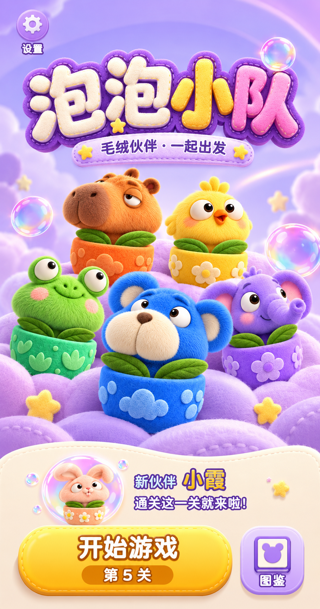
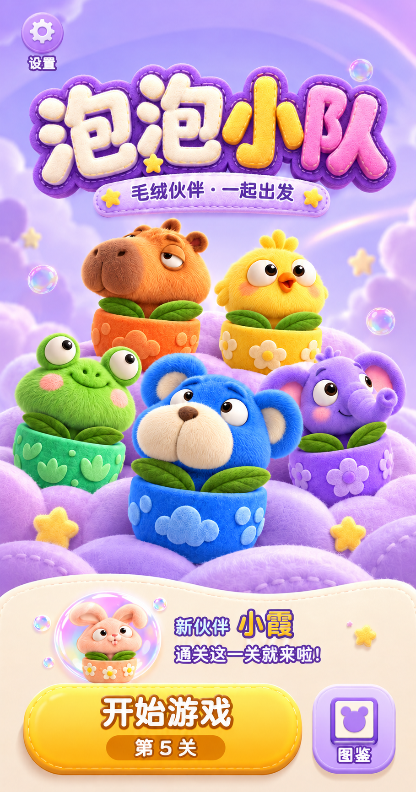

<!doctype html><html lang="zh-CN"><meta charset="utf-8"><meta name="viewport" content="width=device-width,initial-scale=1"><title>最初 C · 仅调整装饰泡泡</title>
<style>*{box-sizing:border-box}body{margin:0;background:#f8f4fc;color:#43295c;font:16px/1.6 -apple-system,BlinkMacSystemFont,"PingFang SC",sans-serif}main{max-width:1100px;margin:auto;padding:26px}h1{font-size:28px;margin:0 0 10px}p{color:#79648b}.note{background:#eee4f8;border-radius:12px;padding:12px 16px}a{color:#7650a2}.grid{display:grid;grid-template-columns:1fr 1fr;gap:22px}article{background:white;border-radius:18px;padding:12px}h2{font-size:18px;margin:0 0 10px}img{display:block;width:100%;height:auto;border-radius:10px}footer{font-size:13px;margin-top:22px}@media(max-width:650px){.grid{grid-template-columns:1fr}main{padding:18px}}</style>
<main><h1>以最初四版中的 C 为准</h1><p class="note">这次仅调整三处背景装饰泡泡的大小和高光。大标题、五位伙伴、底部区域及排版保持原方案。新设计尚未实装，待你确认。</p>
<section class="grid">
<article><h2>最初四版中的 C · 基准</h2><a href="../HomeConcepts-20261025/C-小队集结.png"></a></article>
<article><h2>仅调小装饰泡泡 · 待确认</h2><a href="C-original-smaller-bubbles.png"></a></article>
</section><footer>上次误实施的版本已回退。<a href="http://127.0.0.1:8792/?v=20261025135821">打开已恢复的本地试玩</a>。本次设计稿使用内置 imagegen，<a href="prompts.json">完整提示词和范围说明</a>。</footer></main></html>
